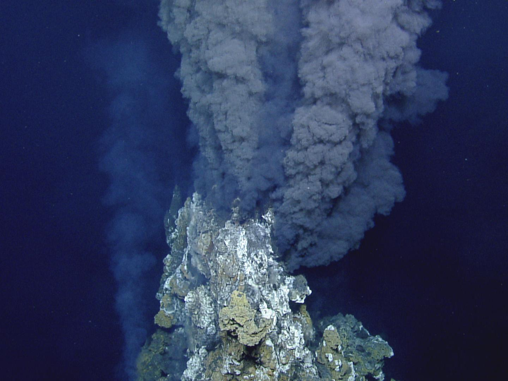
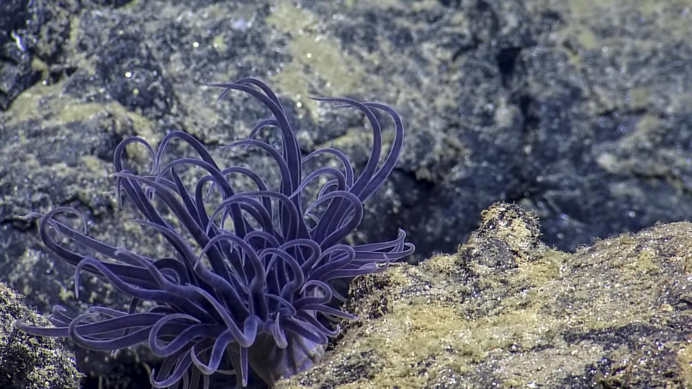
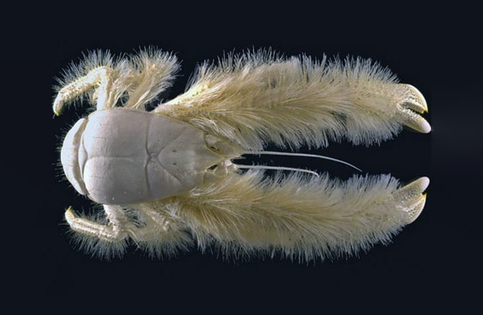
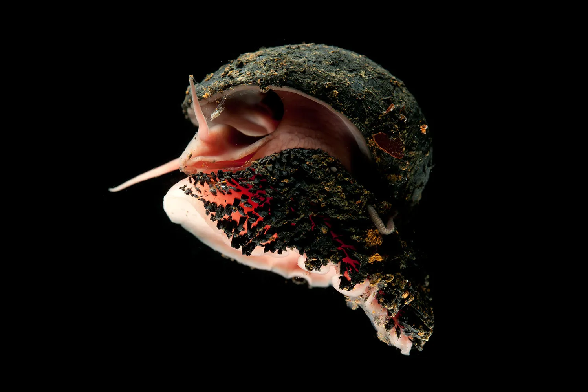
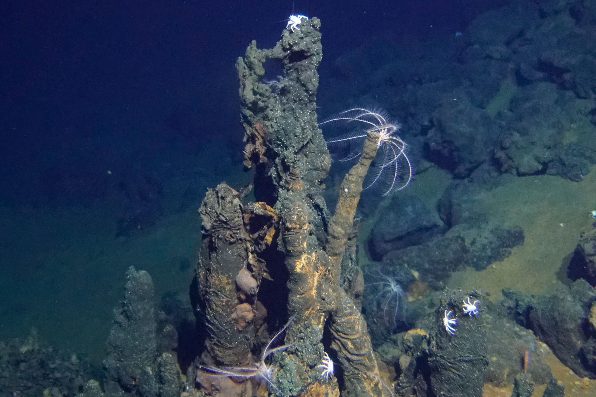
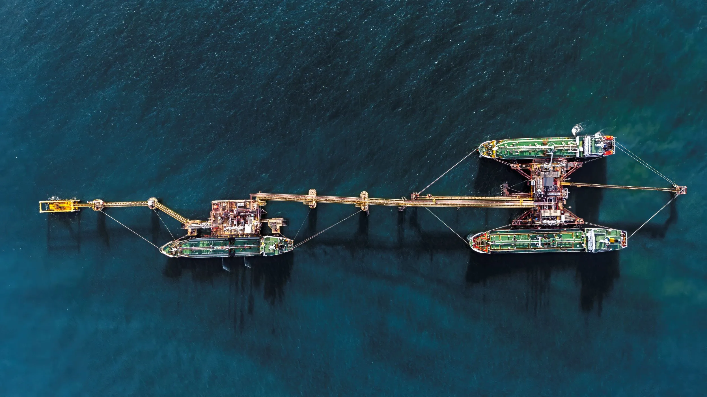

Deep-sea mining threatens to drive to extinction more than half of the snails and other mollusks that rely on hydrothermal vents, according to the latest update of the International Union for Conservation of Nature’s Red List, the global scientific authority on the status of species.
The finding comes as nations are expanding plans for deep-sea mining, eager to access valuable minerals needed for electronics and other uses.

Some of these minerals are found in and near chimney-like structures around hydrothermal vents, areas where cold seawater seeps through fissures in the earth’s crust and hits magma. As the water heats, it picks up elements like copper, zinc, gold and silver before shooting back into the ocean at temperatures that can reach over 750 degrees Fahrenheit. The rapid cooling causes the metals to precipitate out. Companies are interested in harvesting these and other deep-sea metals, arguing that growing demand combined with the serious environmental impact of mining on land make oceans an attractive source.
But the vents and their surrounding areas are rich in life as well as metals. Around the world, they are home to creatures like giant tube worms that can reach more than six feet long, swarms of ghostly white shrimp and furry-looking crabs. The chimney structures are also coated in snails and other mollusks, which are the focus of the Red List update.


The animals’ strangeness is part of their scientific significance. Not many living things could survive, let alone thrive, in such an intense environment. Instead of relying on sunlight for fuel (whether directly, like plants, or indirectly through the food web) these animals run on bacteria that turn chemicals released through the hydrothermal vents, like hydrogen sulfide, into food.
“Down there, they use the Earth as energy,” said Chong Chen, a senior scientist at the Japan Agency for Marine-Earth Science and Technology who worked on mollusk assessment.

And the strangeness doesn’t end there. Take the scaly-foot snail. Its external flesh is covered in scales that contain iron sulfide nanoparticles, and its shell is also infused with iron.
“It’s the only animal that sticks to magnets,” Dr. Chen said. When the snails are exposed to air, he added, “they rust.”
The scaly-foot snail is among the 62 percent of these mollusks, or 125 of 201 known species, that were found to be at risk of extinction from deep-sea mining. These species are not currently thought to be in decline. Rather, they are threatened precisely because they live in areas where permits have already been issued for mining exploration.

“The reason that they’re assessed as endangered is because there is a clear, active threat that their entire habitat, every place they live on earth, could be destroyed if commercial-scale deep-sea mining goes ahead as is currently intended,” said Julia Sigwart, the head of marine zoology at the Senckenberg Research Institute and museum in Germany and one of the scientists who helped lead the assessment.
Even if the chimneys are left in place, she said, sediment from disturbing surrounding areas would smother the mollusks.
Across the world’s oceans, there are about 600 known sites containing hydrothermal vents, each often the size of an auditorium or a football field. Hundreds more are thought to exist.
One mollusk, the hydrothermal vent monoplacophoran, has been found at only two locations along the Mid-Atlantic Ridge off the Azores. But because those places both fall within marine protected areas, the species was among more than 30 that were classified as being of “least concern.”
Researchers have found that, of the various deep-sea habitats threatened by mining, these vents nurture the highest density of life. That has made them especially controversial. Currently, the main focus for deep-sea mining lies elsewhere, with the potato-size nodules found on certain underwater plains. But those areas come with their own unique life, and in 2021, the International Union for Conservation of Nature called for a moratorium on deep-sea mining until its risks were understood and effective protection of the marine environment could be ensured.
The Metals Company, a front-runner in deep-sea mining exploration, said it did not plan to operate in areas around hydrothermal vents.

The Trump administration has moved to push ahead with deep-sea mining in international waters without global approval. The International Seabed Authority, the body that regulates deep sea mining in waters outside of national jurisdiction, is meeting this month in Jamaica to continue what has been a highly contentious series of negotiations.
In addition to the mollusks in protected areas, Thursday’s update to the Red List included another example of conservation success. The numbat is a stripy Australian marsupial that was widespread across southern Australia until European settlers introduced cats and foxes to the continent. By the late 1970s, its numbers had shrunk to around 300 individuals, according to I.U.C.N. But intensive efforts — captive breeding, fencing to keep cats and foxes away, and the killing of foxes and feral cats — have paid off. There are now 2,000 to 3,000 numbats. The efforts need to continue, scientists have noted, but the species has moved from being classified as endangered to near threatened.
But the desert rain frog, which has gone viral on social media for its grumpy-looking face and round body, has moved from near threatened to vulnerable because of diamond mining and energy infrastructure developments in South Africa and Namibia.